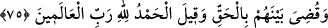
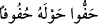

75. Melekleri görürsün ki, Rablerine hamd ile tesbih ederek Arş’ın etrafını
kuşatmışlardır. Artık aralarında adaletle hükmolunmuş ve “âlemlerin Rabbi olan
Allah’a hamdolsun” denilmiştir.
Ey Muhammed! Kıyamet günü Allah kendilerini dirilttikten sonra, Kâşifî’nin dediği
üzere sıdk/doğruluk meclisinde ve yakınlık (kurb) rütbesinde olduğun vakit “melekleri
görürsün ki, Rablerine hamd ile tesbih ederek” yâni Allah Teâlâ’yı lezzet alarak celâl
ve ikrâm sıfatlarıyla zikrederek O’nu hamd ile kendisine lâyık olmayan şeylerden tenzîh
ederek, yâni ‘Allah’ı hamdi ile tesbih ederim’ diyerek “Arş’ın etrafını kuşatmışlardır.”
çevirmişlerdir ve onun etrafında tavaf ederler.
“ ” ya zâiddir ya da kuşatmanın/çevirmenin nereden başladığını göstermek içindir.
” ya zâiddir ya da kuşatmanın/çevirmenin nereden başladığını göstermek içindir.
Bir şeyin çevresinde dolaşıp onu çember gibi sardığında “ denir. Âyetteki
ifâde de bu anlamdadır.
Onlar tesbîh ile uygun olmayan şeyleri zât-ı ilâhîden nefy ederler, hamd ile lâyık olan
sıfatları isbât ederler. Burada en büyük zevk ve lezzetin Hakk’ın ve sıfatlarının
işlerinde (şuûn) müstağrak olmak olduğuna işâret vardır.
Fakir (Bursevî) şöyle der: “Meleklerin Allah’ı tesbih ve hamd ederek Arş’ın
etrafında tavaf ettikleri gibi mü’minler de Allah’ı zikrederek ve şükrederek Kâbe’nin
etrafında tavaf etmektedirler. Dönmenin sırrı ise şudur: Ârifin kalbi gibi vahdet
âleminde ne kayıt vardır ne de yön. Kâbe de zât-ı ahadiyyetin sûreti olduğu için onu
tavaf etmek ve etrafında dönmek emredilmiştir. Tavaf ile namaz arasındaki fark da
şudur: Tavaf, zâhiren ve bâtınen mutlak olmaktır (ıtlak). Namaz ise zâhiren kayıtlı,
bâtınen mutlak olmaktır (ıtlak). Namazın zâhirde bir kayıt olduğuna söylememiz
namazda mutlaka Kâbe’ye doğru yönlerden bir yön ile kayıtlanmak/dönmek
gerektiğinden dolayıdır.
“Artık aralarında” bir kısmı cennete bir kısmı da cehenneme atılmak sûretiyle
mahlûklar arasında ya da aralarındaki üstünlüğe göre makamlarına yerleştirilmek
sûretiyle bizzat melekler arasında hak, yâni “adaletle hükmolunmuş.”
Âkâmü’l-mercân’da der ki: “Melekler cennet ile mükâfâtlandırılmasa da ulemânın -bu
konudaki iki görüşünden daha sahih olanına göre- kendilerine uygun olan nimetlerle
mükâfatlandırılırlar.”
Meleklerin hepsi her ne kadar mâsum ise de amellerinin üstünlüğüne göre sevab
bakımından aralarında üstünlük vardır. İnsanların peygamberleri ümmetlerinin
fertlerinde daha üstün kılındığı gibi, meleklerin peygamberleri de diğer meleklere göre
böyledir.
“Ve” aramızda hak ve adâlet ile hükmettiği ve her birimizi hakkı olan makamına
yerleştirdiği için “âlemlerin Rabbi olan Allah’a hamdolsun” denilmiştir.” Bu sözü
söyleyenler, aralarında hükmedilmiş olan mü’minler ya da meleklerdir. Açıkça